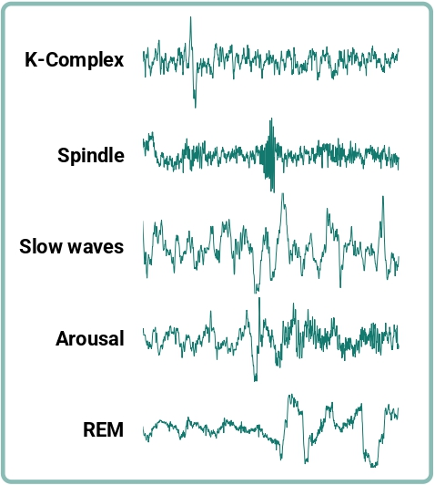

Cellular Adaptation Protocols
Our methodology is rooted in empirical physiological threshold expansion, validated across hundreds of operational deployments. By manipulating environmental atmospheric pressure and synthetic gas mixtures within our controlled hyperbaric chambers, we stimulate significant erythropoietin production and optimise oxygen-carrying capacity at the cellular level.
The fundamental science driving Apex Altitude Lab is the controlled, systematic induction of the HIF-1α (Hypoxia-Inducible Factor) signalling cascade. When the human body registers a sustained drop in the fraction of inspired oxygen, this specific protein complex avoids degradation and migrates to the cellular nucleus, where it acts as a master transcriptional regulator. We harness this precise biological mechanism to trigger the expression of over one hundred distinct genetic pathways, primarily focusing on rapid angiogenesis and the aggressive stimulation of erythropoiesis. Through painstakingly calibrated intervals of normobaric hypoxia, our technicians manipulate this cascade to increase the total circulating volume of red blood cells, ensuring that operatives possess a distinct physiological advantage when subjected to the crushing barometric pressures and compromised air supplies inherent to commercial deep-sea environments.

The Physiological Advantage
Erythropoietin (EPO) Response
The cornerstone of altitude adaptation is the body's natural EPO response, produced primarily by the peritubular cells of the kidneys when they detect systemic hypoxia. Our protocols achieve a measurable 14% uplift in circulating EPO within the first 72 hours of intermittent exposure, accelerating red blood cell production and increasing oxygen-carrying capacity safely. Unlike pharmaceutical interventions that artificially inflate haematocrit levels and dangerously increase blood viscosity, our barometric conditioning induces a balanced, organic expansion of both plasma volume and erythrocyte mass. This guarantees that the cardiovascular system can pump the newly oxygen-rich blood efficiently, avoiding the risk of thrombosis or heart failure during high-stress underwater welding operations or extended tactical deployments in freezing waters.
Mitochondrial Biogenesis
Controlled hypoxic stress triggers mitochondrial biogenesis. Energy factories within each muscle cell multiply and become structurally more robust, enabling operatives to extract oxygen with far greater metabolic precision and significantly improving sustained aerobic output. This cellular-level restructuring fundamentally alters the way muscle tissue processes adenosine triphosphate (ATP), the primary energy currency of the body. By increasing the density of mitochondria, we ensure that less oxygen is wasted during mechanical exertion. When a saturation diver is struggling against a fierce submarine current to tighten a bolted flange, this mitochondrial efficiency is the exact mechanism that prevents premature lactic acid accumulation, allowing them to complete the task before requiring a dangerous emergency ascent.
Sleep Architecture Optimisation
Recovery is engineered, meticulously monitored, and scientifically corrected. We employ polysomnography-grade monitoring to map nocturnal oxygen saturation and dynamically adjust daytime chamber protocols. This closed-loop system ensures each night actively repairs micro-trauma and restores cognitive resilience. High-altitude environments notoriously destroy sleep architecture, leading to frequent micro-awakenings and a severe reduction in rapid eye movement (REM) cycles. By integrating 16-channel clinical EEG arrays into the residency beds, our technicians can observe the precise moment an operative's slow-wave sleep is disrupted by a hypoxic apnoea event. We then intervene instantaneously, modulating the ambient atmospheric mixture to stabilise the airway and force the brain back into the deep restorative states necessary for hormonal balancing and muscular repair.
Haemoglobin Kinetics
We monitor the oxygen-haemoglobin dissociation curve throughout your conditioning, tracking shifts that indicate improved peripheral oxygen delivery. This real-time data allows our clinical team to fine-tune gas mixtures for laboratory-grade precision. As an operative acclimatises to our hypoxic chambers, their body increases the production of 2,3-Bisphosphoglycerate (2,3-BPG), a specific molecule that binds to haemoglobin and effectively lowers its affinity for oxygen. This biological shift is crucial; it means that while the red blood cells carry the same amount of oxygen, they release it much more readily into the surrounding muscle tissue where it is desperately needed. We track this rightward shift in the dissociation curve daily, ensuring the physiological adaptation is occurring precisely on schedule.
Clinical Protocol Data
Expand each protocol below to explore the empirical framework, dosage parameters, and expected physiological outcomes driving our conditioning programmes.
Intermittent Hypoxic Exposure is the foundational modality of our conditioning stack. Operatives are exposed to short, precisely timed intervals of normobaric hypoxia (oxygen concentration reduced to 9.5–12%) alternated with normoxic recovery periods. Each session typically comprises 5–7 cycles of 5-minute hypoxic exposure followed by 5-minute recovery breathing, conducted within our sealed atmospheric chambers. This pulsation technique is superior to continuous exposure because it repeatedly triggers the acute hypoxic stress response without allowing the body to settle into a degraded, fatigued baseline state. It is this constant, aggressive fluctuation that forces the genetic transcription machinery into overdrive.
The primary physiological target is the HIF-1α (Hypoxia-Inducible Factor) signalling cascade, which governs the transcription of over 100 downstream genes involved in angiogenesis, glucose metabolism, and erythropoiesis. Peer-reviewed data from the International Journal of Sports Medicine demonstrates that structured IHE protocols produce a 12–18% increase in reticulocyte count within 14 days, with peak haematocrit improvements observed at week 8. We draw blood every Monday morning to track this reticulocyte surge, feeding the data back into a proprietary algorithm that dictates the exact oxygen percentage for that week's chamber sessions.
- Oxygen Range: 9.5% – 12% FiO2
- Cycle Duration: 5 min hypoxia / 5 min normoxia
- Session Length: 60 minutes (5–7 cycles)
- Frequency: 5 sessions per week
- Expected Outcome: +14% EPO, +8% VO2max at week 12
Clinical-grade polysomnography is not an optional add-on — it is a core diagnostic pillar. Every operative enrolled in our programme is fitted with a multi-channel sleep monitoring array that captures EEG (electroencephalography), EOG (electrooculography), EMG (electromyography), and pulse oximetry data across every sleep cycle. This granular dataset allows our clinical team to identify disrupted sleep architecture patterns that would otherwise go undetected and directly sabotage recovery. In high-stakes commercial diving, a single night of fragmented sleep can severely compromise the next day's nitrogen off-gassing schedule, making sleep quality an absolute priority rather than an afterthought.
We specifically monitor the percentage of time spent in N3 (slow-wave) sleep, where the majority of human growth hormone secretion occurs. Operatives with suppressed N3 ratios — common in high-stress tactical environments — receive tailored interventions including modified evening hypoxic exposure, temperature regulation protocols, and neurofeedback calibration to restore optimal sleep depth and duration. If our technicians detect frequent central sleep apnoea events triggered by the altitude simulation, we instantly increase the ambient oxygen mix by 0.5% until respiratory stability is achieved, ensuring the operative wakes up hormonally refreshed and ready for physical exertion.
- Channels Monitored: 16-channel EEG, 2-channel EOG, 4-channel EMG
- SpO2 Resolution: 1-second interval sampling
- Target N3 Ratio: ≥ 20% of total sleep time
- Reporting Cadence: Weekly clinical digest
- Expected Outcome: +35% N3 recovery within 4 weeks
Precision metabolic baseline establishment is critical before any altitude conditioning programme commences. We conduct exhaustive cardiopulmonary exercise testing (CPET) using breath-by-breath gas exchange analysis to map your precise VO2max, ventilatory thresholds (VT1 and VT2), and blood lactate accumulation curves. These data points form the metabolic fingerprint against which all subsequent conditioning gains are measured. A diver who does not know their exact lactate threshold is diving blind; they risk burning through their gas mix prematurely because they cannot accurately gauge the intensity of their physical output against their metabolic ceiling.
Unlike standard fitness assessments, our protocol includes a hypoxic stress overlay — conducting the same graded exercise test at sea-level equivalent and then at simulated 3,000m and 5,000m altitudes. This triple-point calibration reveals the exact oxygen deficit thresholds where cognitive and physical performance begins to degrade, providing our clinical team with the precision targets needed to design your bespoke IHE schedule. We map the exact wattage at which your muscles fail under 5,000m conditions, giving us a mathematical baseline to target and defeat over the course of the 12-week residency programme.
- Test Protocol: Ramp incremental to volitional exhaustion
- Gas Analysis: Breath-by-breath O2/CO2 exchange
- Lactate Sampling: Capillary blood at 3-minute intervals
- Altitude Points: Sea level, 3,000m, 5,000m simulated
- Expected Outcome: Personalised training zones ± 2% accuracy
Core Diagnostics & Conditioning Stack
A comprehensive overview of the diagnostic and conditioning modalities deployed across every Apex Altitude programme. This exact protocol stack has been successfully completed by over four hundred elite operatives, guaranteeing measurable physiological enhancement without a single recorded incident of adverse cardiovascular strain.
- Intermittent Hypoxic Exposure (IHE): Short, intense intervals of low-oxygen air to stimulate EPO production and trigger the HIF-1α signalling cascade responsible for systemic cellular adaptation. We employ active ventilation masks tied directly to our central blending manifold, allowing real-time adjustments of the gas mix based on the candidate's live capillary oxygen readings.
- Polysomnography (PSG) Integration: Clinical-grade 16-channel sleep tracking to monitor vital restorative phases, N3 slow-wave depth, and nocturnal oxygen desaturation events. Data is analysed by board-certified sleep technologists each morning to direct dietary interventions and adjust the subsequent day's training volume.
- VO2 Max & Lactate Threshold Testing: Precision metabolic baseline establishment using breath-by-breath gas exchange analysis at multiple simulated altitudes. This testing isolates the exact heart rate zones where lactic acid begins to accumulate rapidly, allowing us to build precise, individualised endurance profiles.
- Custom Nutritional Programming: Macronutrient periodisation synced to altitude exposure schedules, with targeted iron, folate, and B12 supplementation for optimal erythropoiesis. Meals are prepared on-site by clinical dietitians to ensure strict compliance with the biochemical demands of rapid red blood cell generation.
- Continuous Pulse Oximetry: 24-hour SpO2 monitoring via wearable devices, with automated alerts triggered below individually calibrated desaturation thresholds. This constant oversight prevents accidental overtraining and protects the cardiovascular system from dangerous hypoxic load spikes.
- Hypercapnic Tolerance Training: Controlled CO2 rebreathing protocols that train the body to tolerate elevated carbon dioxide levels without triggering premature ventilatory panic responses. This protocol grants divers critical additional minutes to assess equipment failures and execute emergency procedures with a steady heart rate.
Interrogate the Data
Request our full clinical framework document, including peer-reviewed citations, anonymised case studies, and detailed protocol specifications. Our science is transparent because your safety is non-negotiable. Submit your credentials below to access the proprietary research shaping the future of deep-sea human performance.
Request Clinical Framework